| 部位 | 所見 |
|---|---|
| 眼底 | Roth斑（白色中心部+出血斑） |
| 眼瞼 | 点状出血（結膜出血） |
| 指 | Osler結節（有痛・免疫現象）、爪下出血（線状） |
| 手掌・足底 | Janeway病変（無痛・血管現象） |
| 脾腫 | 細菌塞栓・免疫反応 |
| 塞栓症 | 脳・腎・脾・肺（右心系IE）への塞栓 |
| 収縮性心膜炎 | 心タンポナーデ | |
| 心膜の状態 | 肥厚・石灰化 | 心嚢液貯留 |
| 心音 | 心膜ノック音 | 心音減弱 |
| 頸静脈波 | Kussmaul徴候（吸気で増加） | x谷のみ（y谷消失） |
| 奇脈 | なし | あり（>10mmHg低下） |
| 治療 | 心膜剥離術 | 心嚢穿刺 |
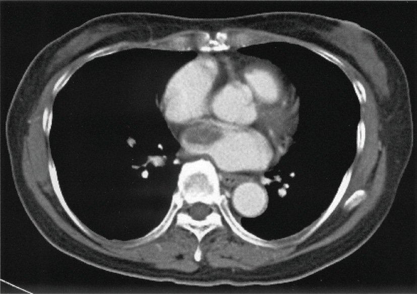
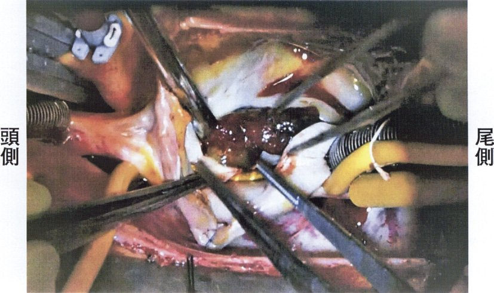
| 所見 | 特徴 | 機序 |
|---|---|---|
| Osler結節 | 有痛性の結節（指・趾の腹側） | 免疫複合体沈着（免疫現象） |
| Janeway病変 | 無痛性の紅斑（手掌・足底） | 細菌塞栓（血管現象） |
| 線状爪下出血 | 爪の下の出血点 | 細菌塞栓 |
| ×結節性紅斑 | 自己免疫疾患（SLE・炎症性腸疾患） | IEとは別 |
| ×蝶形紅斑 | SLEの特徴的皮疹 |
| 状況 | 判断 |
|---|---|
| 手術適応 | 心不全・難治性感染・弁膜破壊・膿瘍・塞栓（>10mm疣贅） |
| 手術可能 | 虚血性脳梗塞後（病変安定なら手術可） |
| 相対的禁忌 | 出血性脳梗塞後（<2週）の昏睡状態→脳出血悪化リスク |
| 理由 | 抗凝固療法が必要な手術→出血性病変に致命的 |
| Diagnosis | Features | Probability |
|---|---|---|
| Pericarditis | Diffuse ST↑, PR↓, pleuritic pain, young | Most likely |
| MI | Focal ST↑ (territory), no PR↓, crushing pain | Less likely |
| Pneumothorax | No ECG changes, absent breath sounds | × |
| PE | S1Q3T3, tachycardia, hypoxia | × |
| ショック分類 | 病態 | CVP |
| 心原性 | 心収縮↓（AMI等） | ↑ |
| 閉塞性 | 緊張性気胸・心タンポナーデ | ↑↑（最も高い） |
| 循環血液量減少性 | 出血・脱水 | ↓ |
| 分布異常性 | 敗血症・アナフィラキシー | ↓ |
| 正しい | 誤り | |
| 頻度 | 粘液腫が最多（50%） | |
| 好発部位 | 左房（75%） | |
| 脳塞栓 | 粘液腫は脳塞栓の原因 | |
| 原発性vs転移性 | 転移性が原発性より多い（5〜10倍） | 原発性>転移性は誤り |
| 悪性腫瘍予後 | 5年生存率<20% | 80%は誤り |
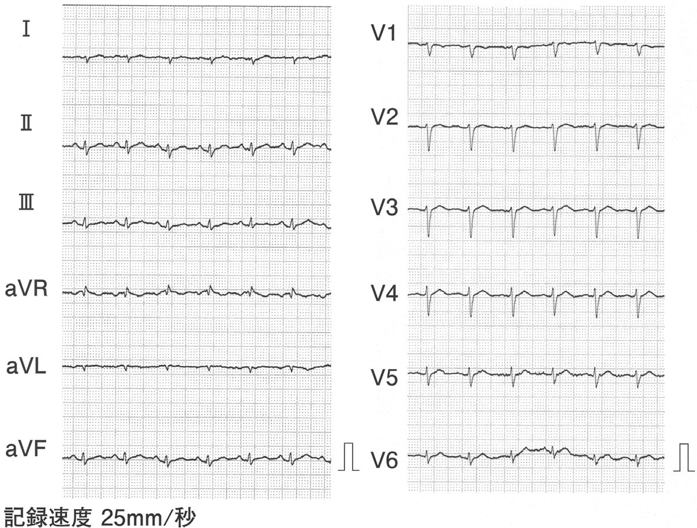
| 原因 | 疾患 |
|---|---|
| 感染性 | 結核（最多、特に途上国）・ウイルス性 |
| 悪性腫瘍 | 転移性（肺癌・乳癌・リンパ腫） |
| 自己免疫 | SLE・RA・強皮症 |
| 代謝性 | 尿毒症（透析患者）・甲状腺機能低下症 |
| ×甲状腺機能亢進症 | 頻脈・高拍出→心嚢液貯留は来しにくい |
| 所見 | 説明 | 正誤 |
|---|---|---|
| 心臓拡張障害 | 肥厚した心膜が心臓を締め付ける→拡張制限 | ○ |
| 左右LV・RV拡張末期圧の等値化 | 心膜による外的制限で両室圧が均等 | ○ |
| ×左心不全が主体 | 両心不全（右心不全が主体） | × |
| ×β遮断薬 | 心拍数を下げると充満時間↓→悪化 | × |
| ×ジギタリス | 心不全に使うが収縮性心膜炎には無効 | × |
| 合併症 | 機序 | 判定 |
|---|---|---|
| 脳梗塞 | 疣贅の塞栓（虚血性脳梗塞） | ○起こり得る |
| 脳出血 | 真菌性動脈瘤破裂・出血性変換 | ○起こり得る |
| 肺うっ血 | 弁破壊による心不全→肺うっ血 | ○起こり得る |
| 貧血の進行 | 慢性炎症による正球性正色素性貧血 | ○起こり得る |
| 低γ-グロブリン血症 | 免疫複合体形成で高γ-グロブリン血症になる | ×起こらない |
| 適応 | 基準 |
|---|---|
| 絶対適応 | 心不全（弁破壊による）・真菌性IE・心内膜下膿瘍・人工弁離開 |
| 相対適応 | 抗菌薬抵抗性感染・大きい疣贅（>10mm）・再発塞栓症 |
| 非適応 | 適切な抗菌薬治療で改善・小さい疣贅のみ（観察） |
| 検査 | 疣贅感度 | 特徴 |
| 経食道心エコー（TEE） | 90〜95% | 食道から近接観察、最高感度 |
| 経胸壁心エコー（TTE） | 50〜75% | 非侵襲的、初期スクリーニング |
| 胸部造影CT | 低い | 膿瘍・合併症評価に有用 |
| 心臓MRI | 中等度 | 研究段階 |
| MIBGシンチ | 適応なし |
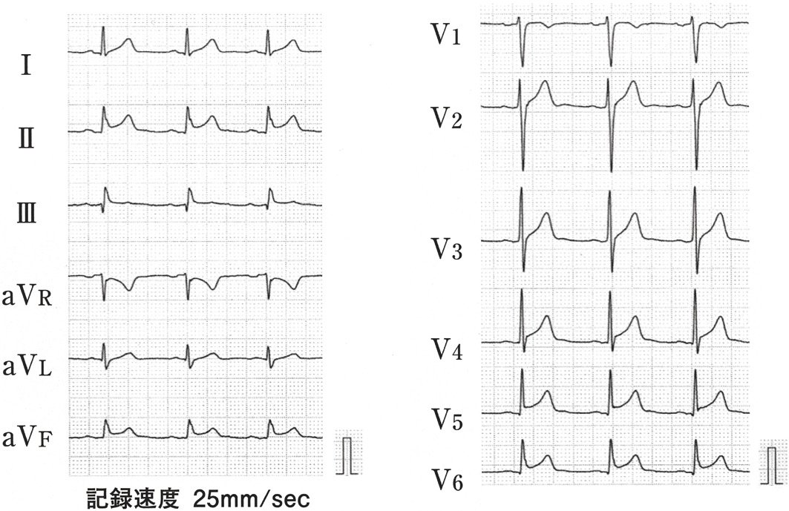
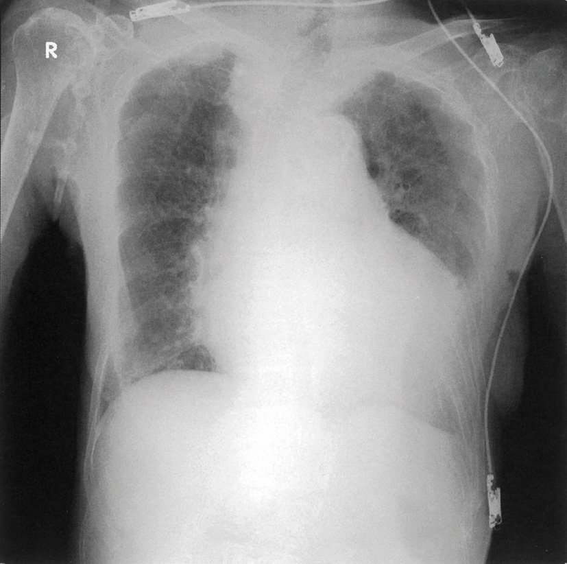
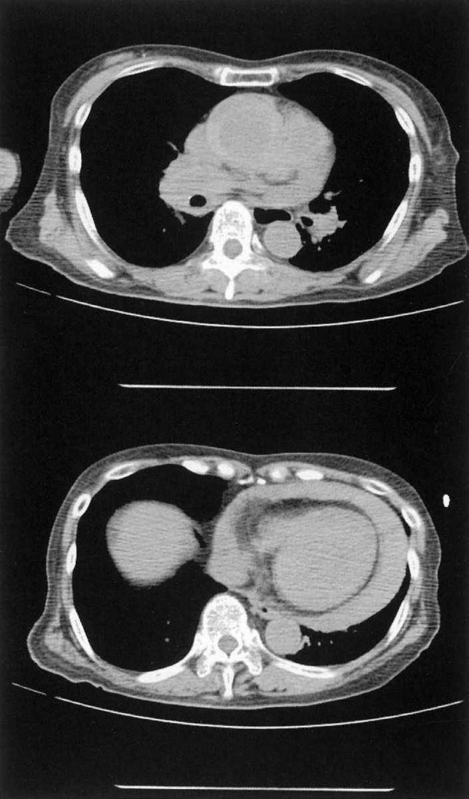
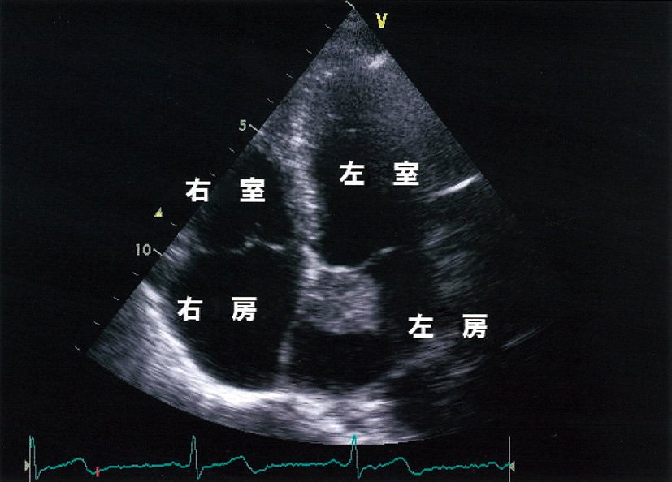
| 合併症 | 説明 |
|---|---|
| 起こり得る | 説明 |
| 発熱 | 腫瘍熱（IL-6産生） |
| 失神 | 腫瘍による弁口完全閉塞→心拍出量急減 |
| 片麻痺 | 腫瘍塞栓→脳塞栓症 |
| 関節痛 | 腫瘍産生サイトカイン（IL-6） |
| ×肺塞栓 | 左心系腫瘍は体循環への塞栓→肺循環には至らない |
| 所見 | 内容 |
|---|---|
| Kussmaul徴候 | 吸気時に頸静脈圧が上昇（通常は低下する） |
| 心膜ノック音（pericardial knock） | 拡張早期、高調音（心膜による心室拡張停止） |
| 心膜石灰化 | 胸部X線・CT→心膜に沿った石灰化 |
| ×奇脈 | 心タンポナーデの所見（収縮性心膜炎ではなし） |
| 原因 | 結核（日本では減少）・ウイルス性・放射線 |
| 治療 | 心膜剥離術 |
| 原因菌 | 特徴 | 頻度 |
| S.aureus（黄色ブドウ球菌） | 最多、血行性、皮膚・カテーテル由来 | 最多50〜60% |
| 腸球菌 | 泌尿器・消化管由来 | 少 |
| 溶連菌（A群） | 咽頭炎・蜂窩織炎後 | 少 |
| 肺炎球菌 | 呼吸器感染後 | 少 |
| 腸内細菌（大腸菌等） | 泌尿器由来 | 2位 |
| 検査 | 感度 | 備考 |
| 経食道心エコー（TEE） | 90〜95% | 人工弁・小疣贅に特に有用 |
| 経胸壁心エコー（TTE） | 50〜75% | 初期検査、非侵襲的 |
| 胸部単純CT | 低い | 偶発的発見程度 |
| PET/CT | 補助的 | 人工弁IE・潜在感染巣 |
| 疾患 | 肺高血圧の有無 | 機序 |
| 強皮症 | ○ | 肺血管リモデリング（PAH） |
| 肺血栓塞栓症 | ○ | 血管閉塞→圧上昇（CTEPH） |
| 僧帽弁狭窄症 | ○ | 肺静脈圧↑→肺動脈圧↑ |
| 急性心筋梗塞 | ○ | 左心不全→肺静脈圧↑ |
| 心タンポナーデ | ×（肺高血圧を伴わない） | 右心への流入低下→肺血流↓ |
| 所見 | 特徴 | 機序 |
|---|---|---|
| Osler結節 | 有痛性の指趾腹側の紅色結節 | 免疫複合体（免疫現象） |
| Janeway病変 | 無痛性の手掌・足底の出血斑 | 細菌塞栓（血管現象） |
| 爪下線状出血 | 爪の下の黒色線状出血 | 細菌塞栓 |
| Roth斑 | 眼底の白色中心出血斑 | |
| ×扁桃白苔 | 扁桃炎 | |
| ×Kernig徴候 | 髄膜炎 |
| 所見 | 有無 | 説明 |
| 奇脈 | ○ | 吸気時BP>10mmHg低下 |
| 頻脈 | ○ | 代償性心拍数増加 |
| 肝腫大 | ○ | 静脈うっ血 |
| 頸静脈怒張 | ○ | CVP上昇 |
| 高血圧 | × | 心拍出量↓→低血圧が基本 |
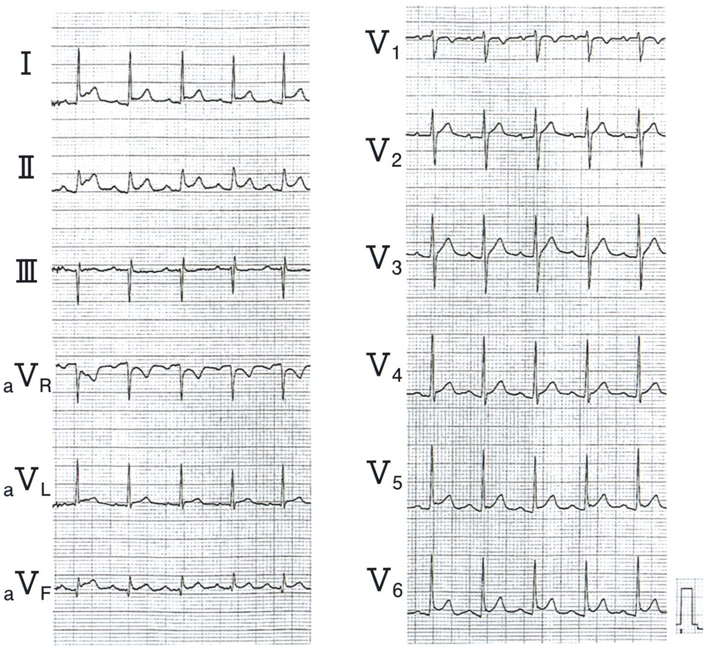
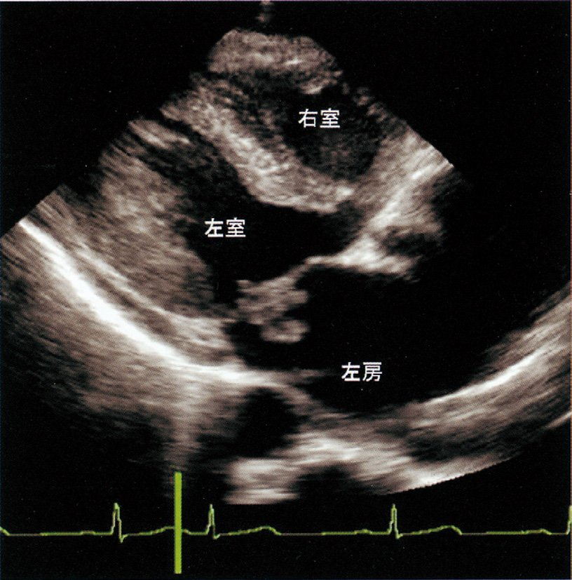
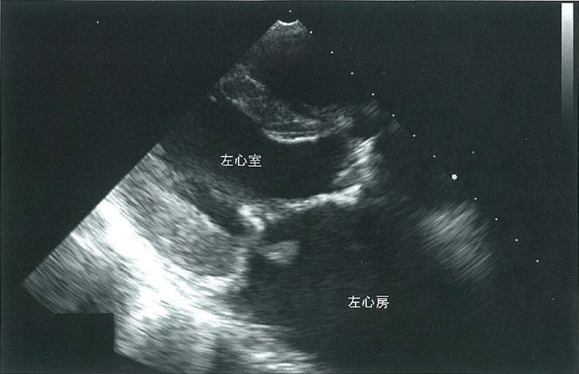
| 左心系IE（僧帽弁・大動脈弁） | 右心系IE（三尖弁・肺動脈弁） | |
| 塞栓症 | 脳・腎・脾・腸・四肢動脈 | 肺塞栓（右→肺循環） |
| 特徴的所見 | 脳梗塞・Osler・Roth斑 | 両肺浸潤影・胸痛 |
| 原因 | 口腔・泌尿器処置 | 静脈麻薬使用・カテーテル |
| 群 | 原因 |
|---|---|
| 第1群 PAH | 肺動脈性（特発性・薬物・膠原病・先天性心疾患） |
| 第2群 | 左心性疾患（左心不全・弁膜症→肺静脈圧↑） |
| 第3群 | 肺疾患・低酸素（COPD・間質性肺炎） |
| 第4群 | 慢性血栓塞栓性（CTEPH） |
| 第5群 | 原因不明・多因子性 |
| 本問の答 | ASD（第1群）・慢性PE（第4群）・COPD（第3群） |
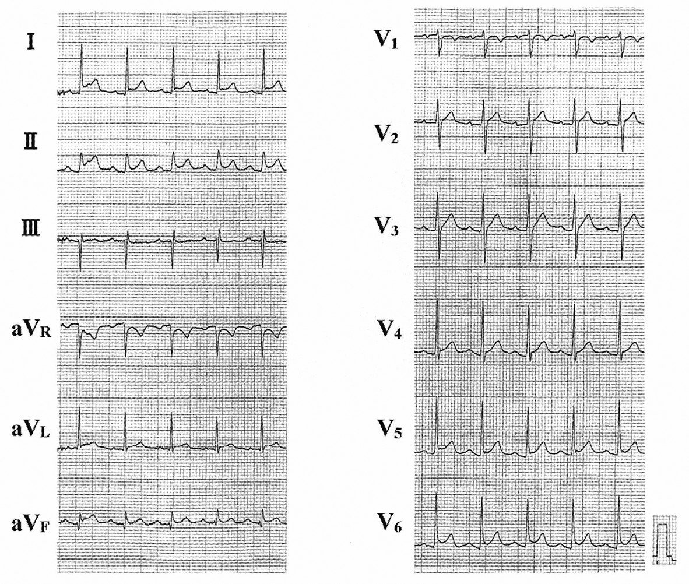
| 所見 | IE | 鑑別疾患 |
| 四肢動脈閉塞 | ○（塞栓） | |
| Osler結節（指先の有痛性小結節） | ○（免疫現象） | |
| 脳動脈瘤（真菌性動脈瘤） | ○ | |
| 血液培養グラム陽性菌 | ○ | |
| 蝶形紅斑 | ×（IEにはない） | SLEに特徴的 |
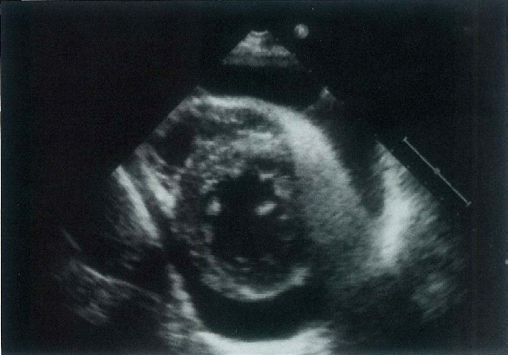
| IEに特徴的な所見 | IEに特徴的でない所見 |
| 爪下線状出血斑 | 黄色腫（高脂血症） |
| Osler結節（有痛性指趾） | |
| Roth斑（眼底） | |
| 脾腫 |
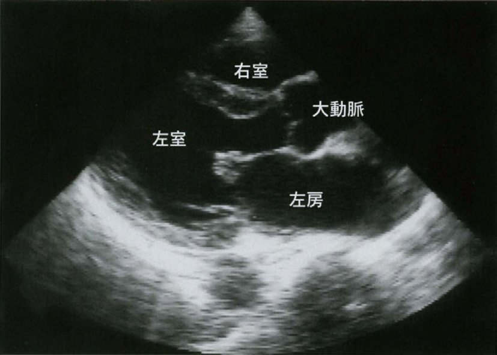
| 検査 | 予想される結果 | 理由 |
| 血液培養 | 陽性（正答） | IEの原因菌が血中に持続 |
| 血清鉄 | 低下（増加でない） | 慢性炎症による貧血 |
| CRP | 上昇（陰性でない） | 炎症マーカー |
| ガンマグロブリン | 増加（減少でない） | 免疫複合体形成 |
| CK | 正常（増加でない） | 心筋ダメージがなければ上昇なし |
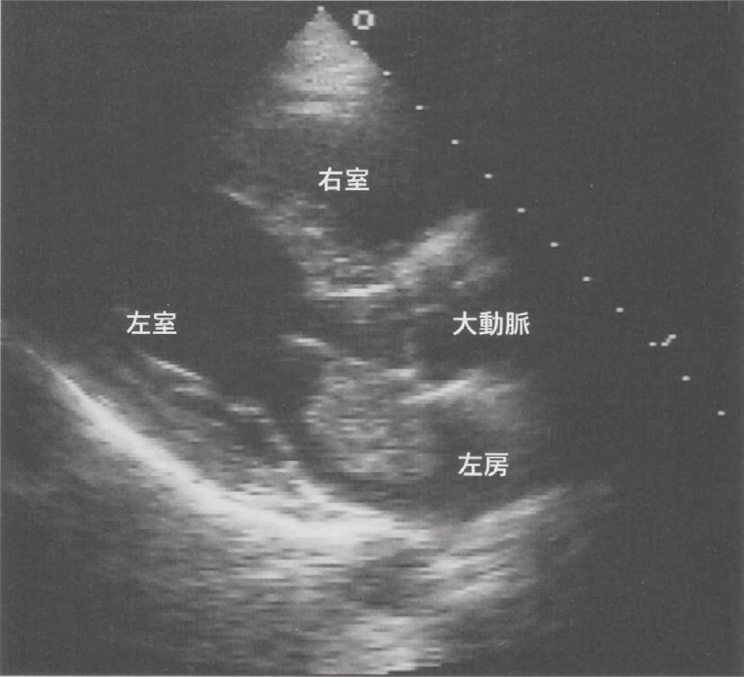